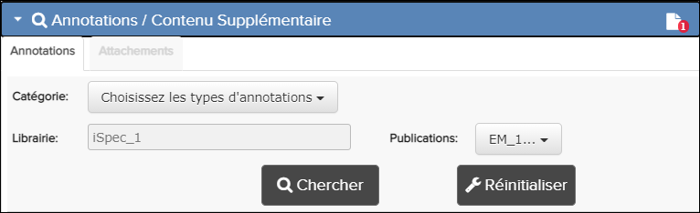
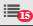
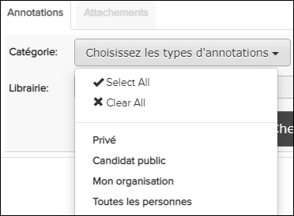
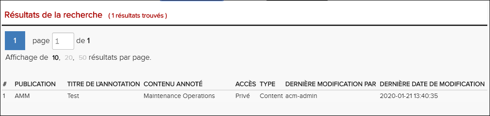
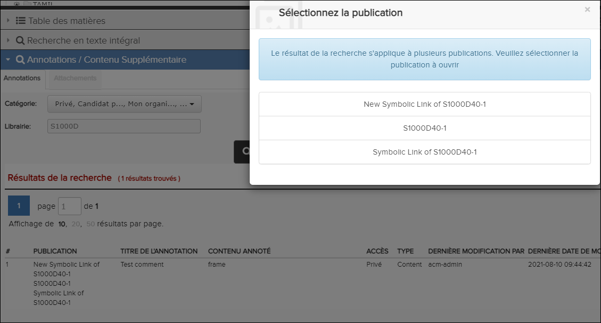

La boîte de dialogue de recherche d'annotations permet de
rechercher vos annotations et / ou candidats publics. Vous pouvez réinitialiser ce
formulaire en cliquant sur le  bouton
Réinitialiser.
bouton
Réinitialiser.
Si votre administrateur a activé le privilège Accès uniquement aux révisions en cours, les
publications qui ne sont pas à jour n'apparaissent pas dans les résultats de
recherche. Vous devez mettre à jour la dernière révision avant que ces publications
ne soient disponibles. Reportez-vous à volet La fenêtre de Librairie pour plus
d'informations.
Pour rechercher des annotations, procédez comme
suit:Remarque : Lorsque vous effectuez une recherche d'annotations sur une
publication de lien symbolique, les informations affichées concernent la
publication d'origine (cible).
-
Sélectionnez la bibliothèque que vous souhaitez rechercher dans le volet
Bibliothèque.
La page de recherche peut être ouverte soit dans le cadre d'une seule publication, publication de liens symboliques ou d'une bibliothèque. S'il est ouvert au niveau de la bibliothèque, il effectuera une recherche dans tous les publications de cette bibliothèque.Remarque : Par défaut, toutes les publications de la bibliothèque sont sélectionnées dans la liste déroulante Publications.
-
Cliquez sur l'en-tête sous le volet
Table des matières.
Le volet de recherche de la boîte de dialogue de recherche Annotations / Contenu Supplémentaire se développe.
-
Cliquez sur l'onglet Annotations.
La boîte de dialogue de recherche d'annotations apparaît.

Boîte de dialogue de recherche d'annotations
Remarque : Si vous êtes autorisé à créer / modifier / supprimer des annotations et qu'il existe des annotations de candidats publics à réviser, l'icône des
annotations de candidats publics à réviser, l'icône des candidats publics apparaît dans les Annotations / Contenu Supplémentaire entête. Le nombre en bas à droite de l'icône des candidats publics indique le nombre de les candidats sont dans le document. -
À partir Catégorie
Choisissez les types d'annotations menu déroulant,
sélectionnez l'une de ces options:

- Cliquez pour rechercher tous les types d'annotations.
Remarque : Vous pouvez effacer cette sélection en cliquant sur .
- Sélectionnez Privé pour renvoyer les annotations créées par l'utilisateur dans la bibliothèque ou la publication sélectionnée.
- Sélectionnez Candidat public pour renvoyer les
annotations qui doivent être approuvées avant de pouvoir être rendues
publiques.
- Lorsqu'un utilisateur dispose du privilège d'écriture pour les annotations publiques et sélectionne le candidat public, la recherche revient annotations publiques des candidats dans la bibliothèque ou la publication sélectionnée pour examen.
- Lorsqu'un utilisateur n'a pas de privilège d'écriture pour les annotations publiques et sélectionne le candidat public, la recherche renvoie les annotations de candidats publics dans la bibliothèque ou la publication sélectionnée qui ont été créées par la connexion utilisateur.
- Sélectionnez Mon organisation pour renvoyer toutes les annotations pour votre organisation uniquement.
- Sélectionnez Toutes les personnes pour renvoyer toutes annotations publiques à toutes les organisations.
- Cliquez pour rechercher tous les types d'annotations.
- Facultatif: décochez les publications dans la liste déroulante des publications pour les supprimer de la recherche.
-
Cliquez sur le bouton
Rechercher.
Le volet Résultats de la recherche apparaît sous le volet de recherche des annotations. Cet exemple montre les résultats de la recherche avec le bouton radio Mes annotations sélectionné:

Résultats de la recherche d'annotations
-
Cliquez sur un élément d'annotation pour afficher le module de données qui lui
est associé dans le volet Contenu. L'annotation est en
surbrillance dans le volet Contenu. La publication et le module de données
correspondants sont également sélectionnés et affichés dans les volets
Bibliothèque et Table des matières respectivement.
Si vous effectuez une recherche avec plusieurs liens symboliques dans la même bibliothèque, la publication d'origine (cible) et les multiples publications de liens symboliques s'affichent dans un seul enregistrement. Lorsque vous Sélectionnez la publication, la boîte de dialogue Sélectionner la publication s'affiche. Vous devez sélectionner la publication à ouvrir. Par example:

Sélectionnez la publication - Annotations
-
Cliquez sur l'onglet Afficher les annotations pour
afficher les informations de l'annotation.
Les utilisateurs autorisés à créer, modifier ou supprimer des annotations peuvent approuver ou rejeter une annotation candidate publique après l'avoir sélectionné dans l'onglet Afficher les annotations.